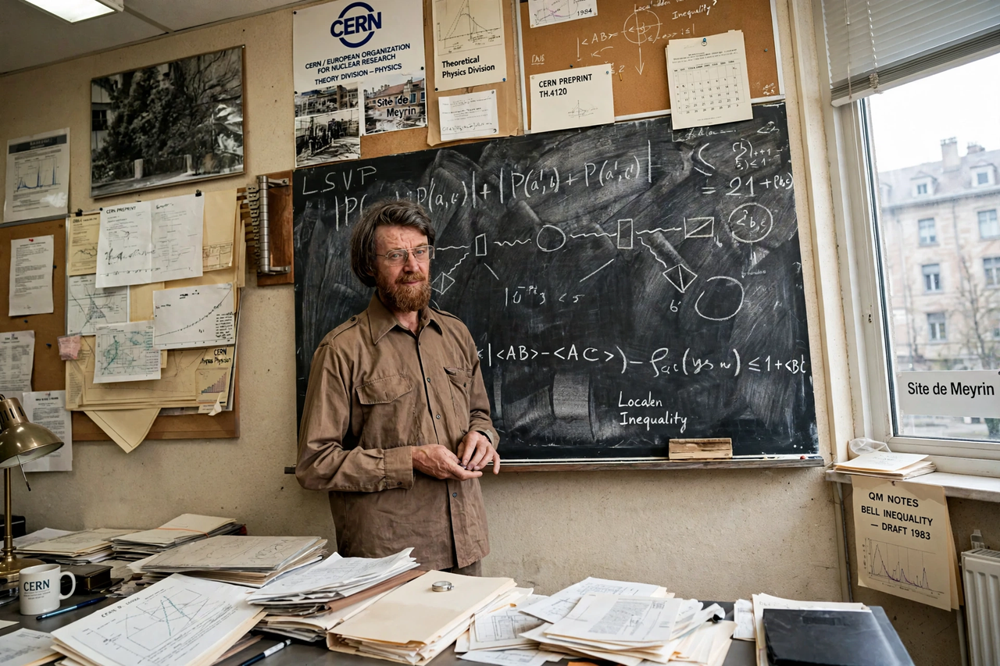

John Stewart Bell
| Born | 28 June 1928, Belfast, Northern Ireland |
|---|---|
| Died | 1 October 1990 (aged 62), Geneva, Switzerland |
| Known for | Bell's theorem, Bell states, Adler–Bell–Jackiw anomaly |
| Institutions | CERN |

[Image: Photograph of John Stewart Bell at CERN, a bearded man in middle age]John Stewart Bell (28 June 1928 – 1 October 1990) was a physicist from Northern Ireland and the originator of Bell's theorem, one of the most significant theorems in the foundations of quantum mechanics. Bell's theorem, together with the experimental results it stimulated, overturned the prevailing view that the puzzles raised by the EPR paradox were merely philosophical.
Bell spent most of his career at CERN in Geneva, where his 'day job' was accelerator and particle theory; his work on quantum foundations, pursued partly as a sideline, produced the inequality that bears his name (1964), the analysis of the entanglement experiments of Clauser, Aspect and others, and influential essays collected in Speakable and Unspeakable in Quantum Mechanics (1987).
Early life and career
Bell was born in Belfast into a working-class family and educated at Queen's University Belfast, taking degrees in physics (1948) and mathematical physics (1949). He worked on accelerator design at the Atomic Energy Research Establishment, Harwell, and moved to CERN in 1960, remaining there for the rest of his life.
Bell's theorem
In 1964, in the paper 'On the Einstein Podolsky Rosen paradox', Bell showed that any theory in which physical systems possess local, predetermined properties ('local hidden variables') must satisfy an inequality — Bell's inequality — that quantum mechanics predicts will be violated for measurements on entangled particles. The question of whether nature is locally realistic thereby became experimentally decidable.
Experiments by John Clauser and Stuart Freedman (1972) and by Alain Aspect and collaborators (1981–82), and later 'loophole-free' tests in 2015, consistently violated the inequality as quantum mechanics predicts. Aspect, Clauser and Anton Zeilinger received the 2022 Nobel Prize in Physics for this work.
Other work and death
With Roman Jackiw and Stephen Adler, Bell is associated with the chiral anomaly (the Adler–Bell–Jackiw anomaly), an important result in quantum field theory, and he contributed to the theory of the CPT theorem context and to accelerator physics. Bell died suddenly of a cerebral aneurysm in Geneva in 1990, aged 62; he had been considered a strong candidate for a Nobel Prize.